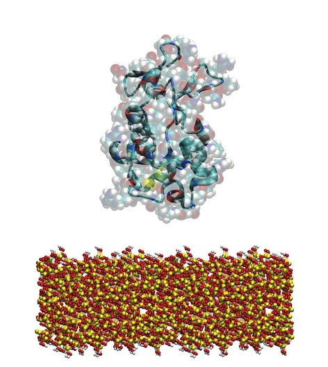
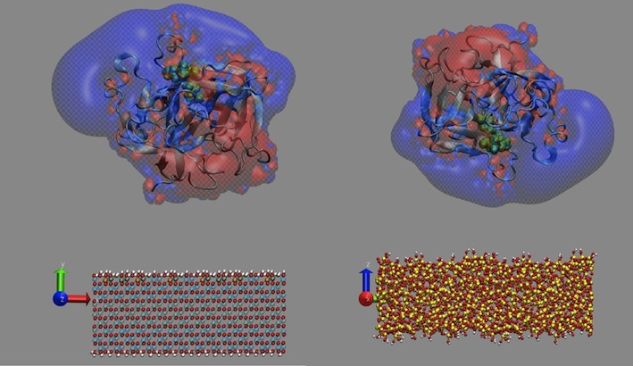
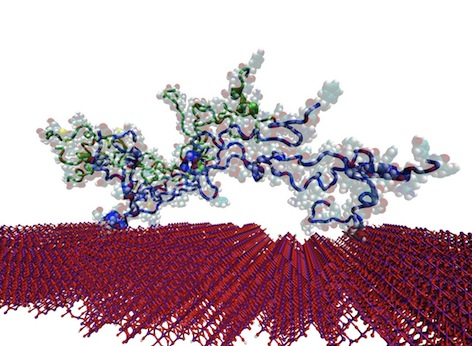
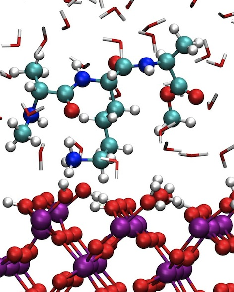
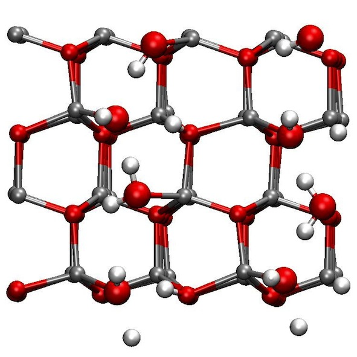
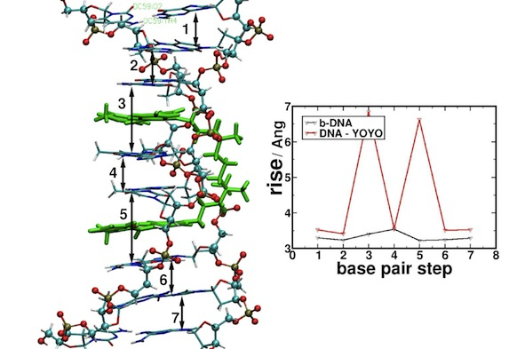

| |
In my group we focus on biomolecular modeling in solution and at material interfaces.
While we work on our questions at the molecular level by applying different atomistic simulation methods, the exchange and collaboration with other experimental and theoretical groups is a main concern for us. In this way, we manage to explain macroscopic phenomena at the molecular level.
composition of the group:
Susan Köppen (group leader)
PhD students:
Maria von Einem (RTG 2247 , “Quantum mechanical materials modelling – QM3”)
Aparna Sai Malisetti (SALFIB, DFG KO3811)
Students:
Jana Lierath (SALFIB)
Annika Niemann (Huntington)
Interests
- structure – function – interaction of (ECM) proteins
- structure – function – interaction of (ECM) proteins
- ligand binding
- PTM (glycos., phospho.)
- environment (water, salt, pH)
Huntington Disease
- Htt-chaperone docking
- Role of mutations
Cooperating groups:
AG Kirstein (Cell Biology, FB2, Uni Bremen)
AG Neudecker (Theoretical Chemistry, FB2, Uni Bremen)
M. Kulke, MU (USA)
Related publications:
S.M. Ayala et al, Nature Communications 13, 4692 (2022)
DOI:10.1038/s41467-022-32370-5
Fibrilar Proteins
- role of posttranslational modifications on thier binding properties
- environmental induced conformational/ morphological changes
Cooperating groups:
AG Brüggemann (Biophysics and Applied Biophysics, HS Bremen)
AG Noeske (IFAM, Bremen)
Related publications:
S. Stamboroski, et al., Macromolecular Bioscience 21 (5), 2000412 (2021)
S. Stamboroski et al., Biomacromolecules 22, 4642-4658 (2021)
M. Kulke et al., Journal of Chemical Information and Modelling 59, 4383-4392 (2019)
Chitosan Interactions
- Protein binding properties of chitosan at varying environmental conditions
Cooperating groups:
G Ignatov (Physical Chemistry, LSU, Nizhni Novgorod, RU)
AG Brüggemann (Biophysics and Applied Biophysics, HS Bremen)
Related publications:
A.A. Avdoshin et al., Mater. Adv. accepted, 1–12 (2023) *
DOI:10.1039/D2MA00830K
Running projects
| Modelling of lysozyme adhesion on solid oxide surfaces
M. Koleini, S. K�ppen, L. Colombi Ciacchi, (HMI)
L. Treccani, K. Rezwan, (Advanced Ceramics)
The biofunctionalization of materials surfaces with adsorbed lysozyme proteins is a promising
route for the development of hybrid materials possessing antibacterial properties. Although a number
of experimental and theoretical studies deal with the mechanisms responsible for the enzymatic
activity of lysozyme, very little is known about the changes of enzyme activity upon the interaction of
the protein with materials surfaces. This project comprises an extensive investigation of the adsorption
of lysozyme on different oxide materials by means of classical and DFT-level simulations.
|
 |
| Comparative adsorption of chymotrypsin on silica and alumina surfaces
K. Li, S. K�ppen, L. Colombi Ciacchi, (HMI)
L. Derr, L. Treccani, K. Rezwan, (Advanced Ceramics)
Y. Koehler, M. Schmidt, R. Dringen, (Neurobiochemistry)
Next to the net charge of chymotrypsin, due to the unsymmetric charge distribution of the chymotrypsin molecules surface, different orientation modes of an adsorbed molecule on different charged oxide surfaces are expected. Comparatative classical simulations on negativley charged silica as well as positively charged alumina surfaces will be used to investigate possible changes in the secondary structure of the whole protein and conformational changes in the catalytic triade under the surfaces influence.
|
 |
Modelling of collagen nano fibrils on titania surfaces
W. Friedrichs, B. Ohler, W. Langel, (Biophysical Chemistry, Greifswald)
S. Monti, (ICCOM CNR, Pisa, Italy)
S. K�ppen, (HMI)
The incorporation of implant materials is a complex process with a number of constituent parts which initialize the growth of new tissue around the implant. The functionalization with specific proteins can enhance this process and inhibits inflammative reactions. The success of the incorporation of the whole implant strongly depends on the very first step, the adsorption of proteins of the extracellular matrix. This interaction can be controlled by wettability as well as roughness of the materials surface. The focus of this project is the investigation of the adsorption of collagen at different length scales on titania surfaces by means of classical molecular dynamic simulations.
|
 |
related publications:
W. Friedrichs, B. Ohler, W. Langel, S. Monti, S. K�ppen
Adsorption of Collagen Nanofibrils on Rough TiO2:A Molecular Dynamics Study
Advanced Engineering Materials 13, B334-B342 (2011)
(Inside Front Cover),
Full text
S. K�ppen, W. Langel
Simulation of adhesion forces and energies of peptides on titanium dioxide surfaces
Langmuir 26, 15248-15256 (2010)
Full text
S. K�ppen, B. Ohler, W. Langel
Adsorption of Collagen Fragments on Titanium Oxide Surfaces: A Molecular Dynamics Study
Z. Phys. Chem. 221, 3-20 (2007)
Full text
|
| Chemistry on titania surfaces
W. Friedrichs, W. Langel, (Biophysical Chemistry, Greifswald)
J. Bartels, S. K�ppen, L. Colombi Ciacchi, (HMI)
The adsorption of small organic molecules on charged oxide surfaces often is attended by chemical processes. The hybrid interface has been investigated stepwise by means of molecular dynamics simulations on the DFT and classical level. Analysis of the water adsorption resulted in models for partially hydroxylated surfaces used for further simulations.
In first principles molecular dynamics simulations of single amino acid molecules and small peptides on titania surfaces it has been shown, that these surface sites are mostly involved in the adsorption process. Adsorption of charged organic molecules often include proton transfer reactions and charge adjustments in the adsorbed functional group as well as the surface binding site.
Simulations at the DFT level have been performed on the Norddeutscher Verbund f�r Hoch- und H�chstleistungsrechnen (HLRN).
|
 |
| related publications:
S. K�ppen, O. Bronkalla, W. Langel
Adsorption Configurations and Energies of Amino Acids on Anatase and Rutile Surfaces
Journal of Physical Chemistry C 112, 13600-13606 (2008)
Full text
S. K�ppen, W. Langel
Adsorption of small organic molecules on anatase and rutile Surfaces: A theoretical study
Physical Chemistry Chemical Physics 10, 1907-1915 (2008)
Full text
S. K�ppen, W. Langel
Simulation of the Interface of (100) rutile with aqueous ionic solution
Surface Science 600, 2040-2050 (2006)
Full text
|
Solubility of zinc oxide nanoparticles
S. Sauer, Th. Frauenheim, (CMS)
S. K�ppen, L. Colombi Ciacchi, (HMI)
S. Pokhrel, L. M�dler, (IWT)
In a recent experimental study in the group of Prof. Lutz M�dler, University of Bremen (IWT) nanoparticles were tested in an in-vitro toxicological screening study investigating the mechanisms of toxicity in mammalian cells. Within this study the release of Zn2+ ions was found to be different in cell culture media in terms of the kinetics and the saturation concentration compared to pure water.
By means of molecular dynamics simulations spanning from the pure DFT level over DFTB+ and reactive forcefield level to classical simulations the solubility of single Zinc ions and small ZnO clusters will be investigated. In a first step a careful comparative analysis of the water adsorption on different surface models including defective structures is necessary. In a next step meta dynamics simulations of the pure water surface system will give reliable energy barriers for the dissolution of small complexes wich will be compared with dissolution barriers in the presence of organic additives.
Simulations at the DFT level have been performed on the Norddeutscher Verbund f�r Hoch- und H�chstleistungsrechnen (HLRN).
|
 |
| YOYO-1 complexed DNA
S. K�ppen, J. Schneider, L. Colombi Ciacchi, (HMI)
M. Mertig, (PhysChem, TU Dresden)
Recent measurements of a fully saturated YOYO-1 - DNA complex resulted in an elongation of 0.54 nm DNA per YOYO molecule and untwisting of the helix has been found to be 24 degree per dye (see literature below). These values differ significantly from experimental and simulation results of the YOYO - DNA complex with both tentacles of YOYO bond to the helix. In this project, the most favourable binding mode of YOYO to a DNA molecule is investigated by means of classical molecular dynamics simulations.
|
 |
| related publications:
K. G�nther, M. Mertig and R. Seidel
Mechanical and structural properties of YOYO-1 complexed DNA
Nucleic Acid Research, 38, 6526-6532 (2010)
|
|


{kind=link}